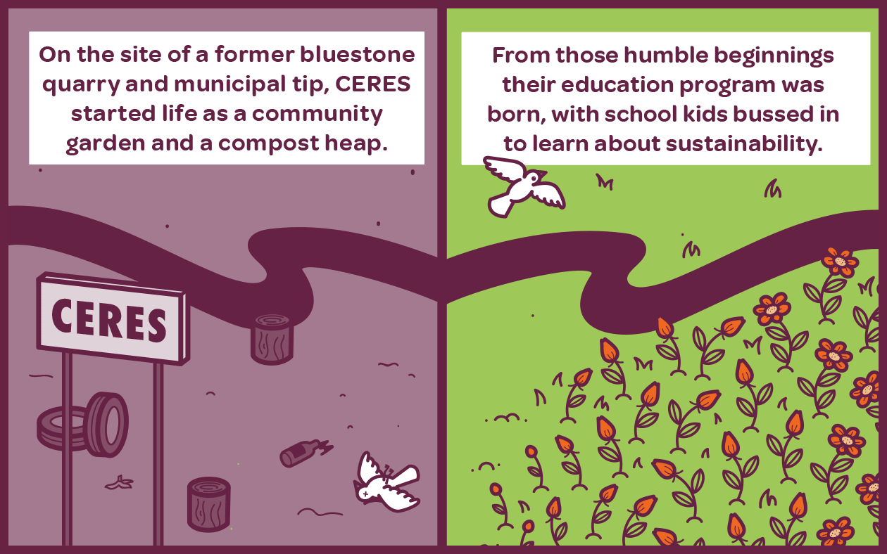
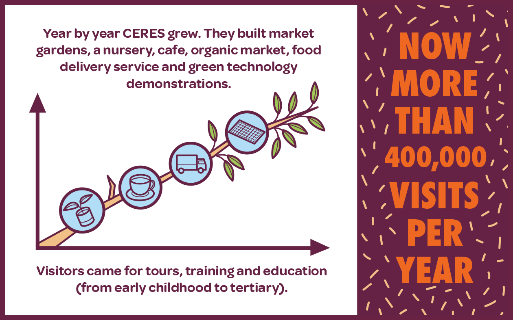
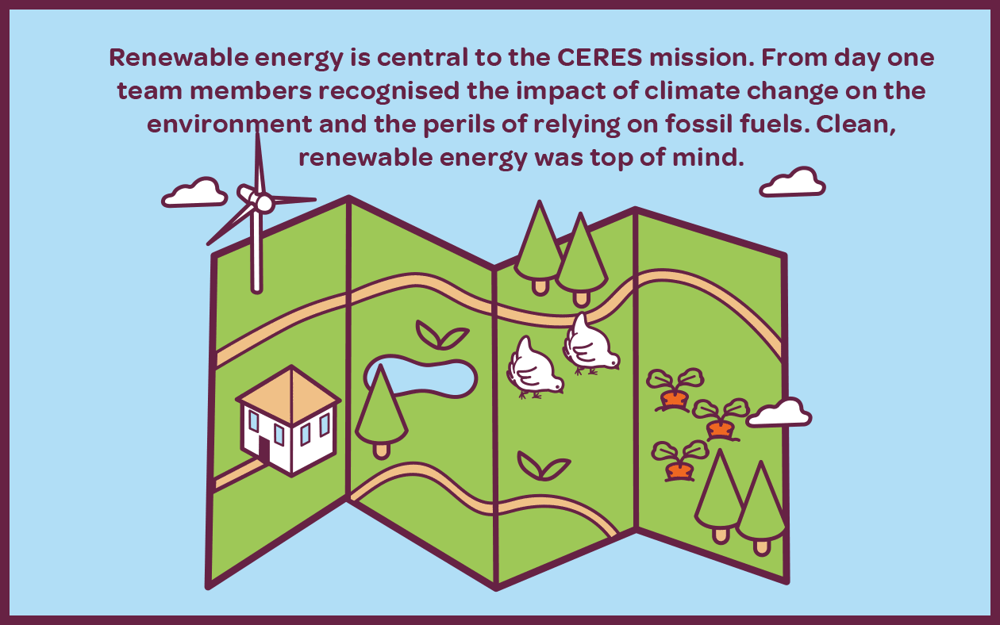
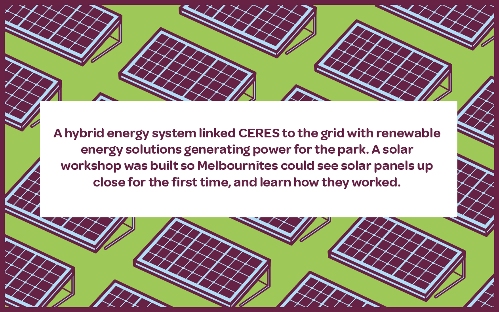
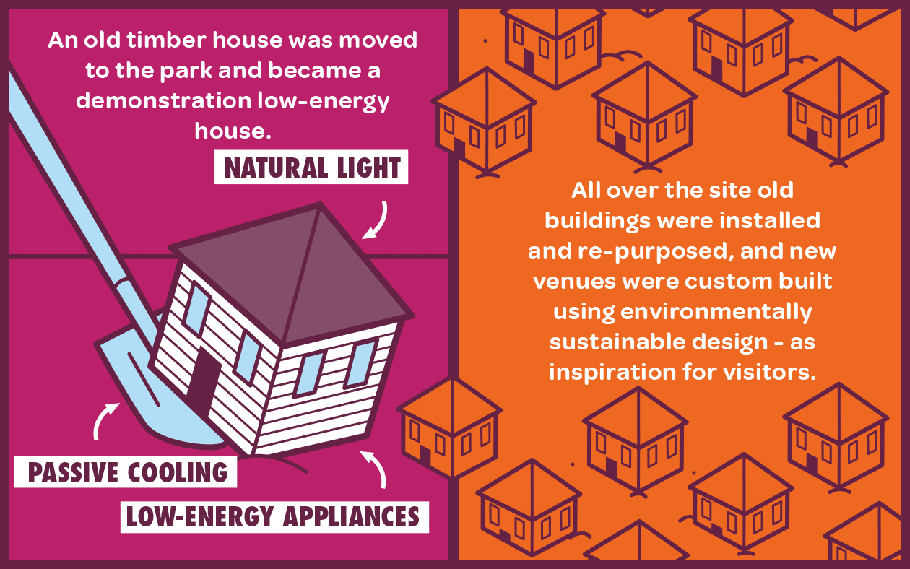
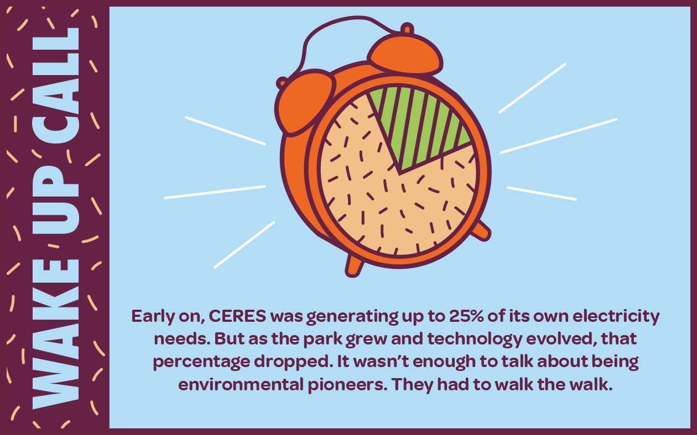
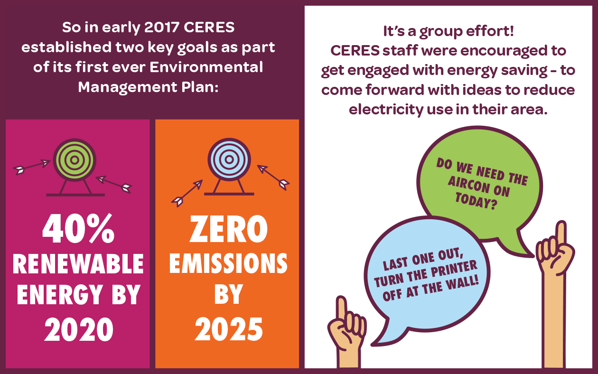
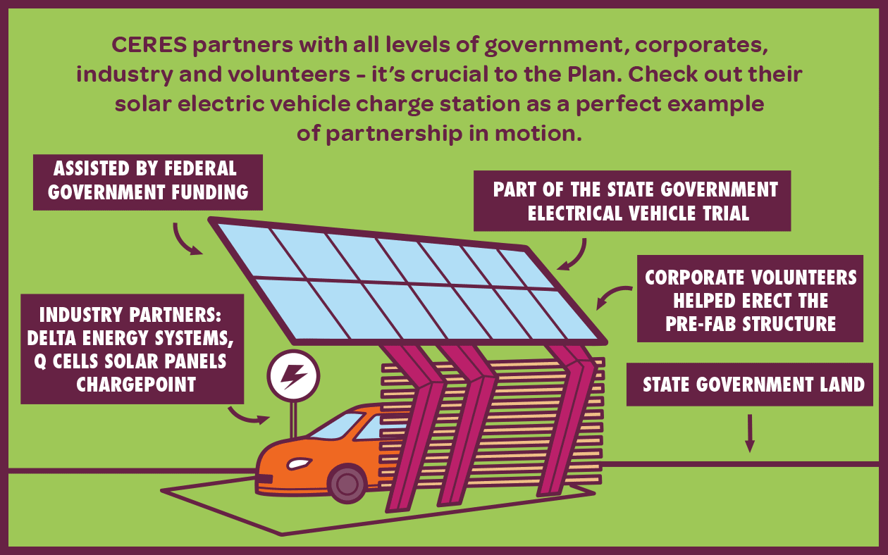
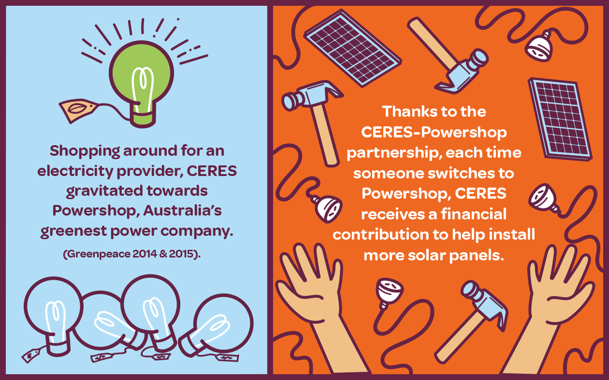
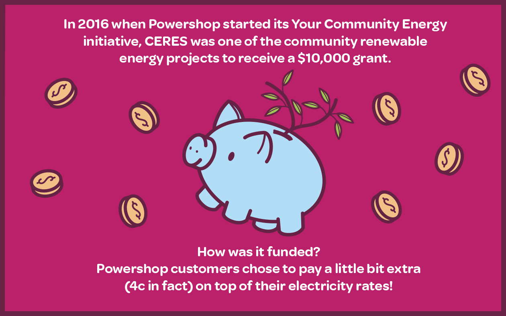
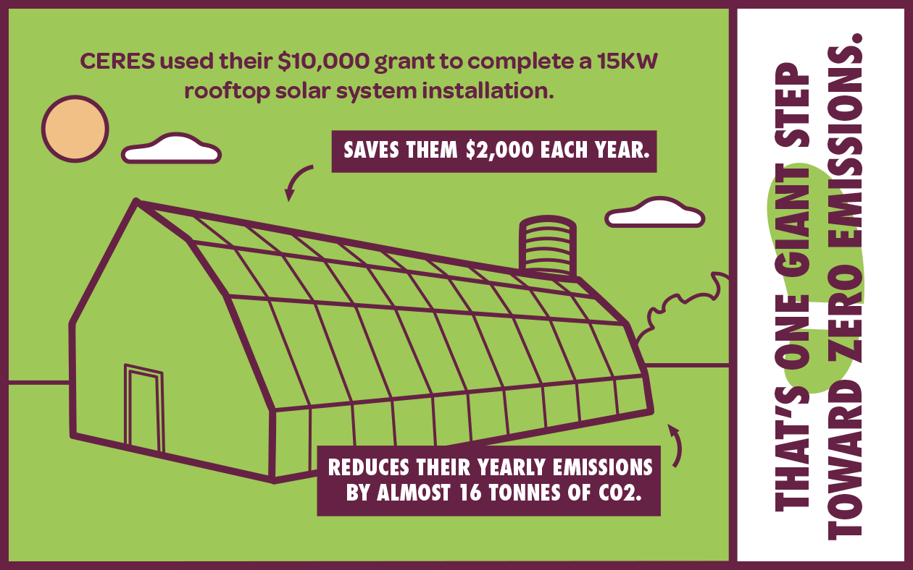
![Thanks to the extraordinary generosity of powershop customers! “$20,000 – Total amount Powershop aimed to raise with Your Community Energy by the end of 2016.” “$100,000 – Total amount Powershop actually raised with Your Community Energy by Feb 2017!” “$300,000 – Total amount Powershop has raised with Your Community Energy as at November 2017 (and customers just keep on giving).” Your Community Energy showed what CERES already knew. People are behind renewable energy and individuals can make a huge difference.](images/image-12.png)